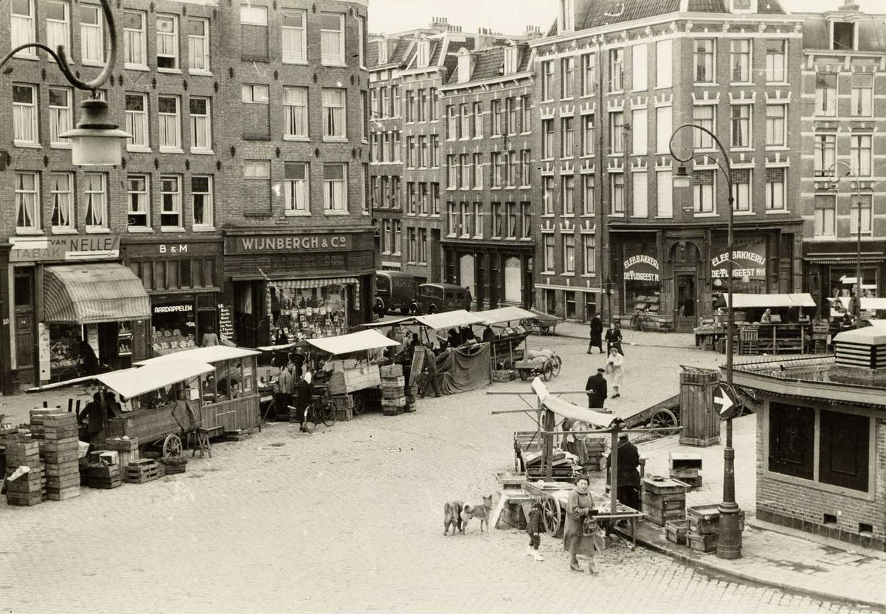

Нидерланды
- страна, расположенная в северо-западной Европе с заморскими территориями.

- страна, расположенная в северо-западной Европе с заморскими территориями.
Интересные факты про Роттердам:
Первые упоминания о поселении в районе, где небольшая река Ротте впадает в Маас и построена дамба на реке Ротте, появляются в документах от 1283 г. В 1340 г. Роттердаму были дарованы права и привилегии города, и 10 лет спустя его жители получили от графов разрешение на строительство канала, специально для перевозки английской шерсти. Именно с этого времени начинается развитие Роттердама как торгового порта.
Несмотря на войны и стихийные бедствия, которые препятствовали экономическому росту, город продолжал развивать активную торговлю, особенно с портами на Ла-Манше и на Средиземном море. Туда перевозили продукты рыболовства и сельского хозяйства, обратно привозили соль, вино, фрукты. Интенсивное судоходное движение вынудило городские власти построить большой порт с 10 новыми широкими причалами в 1600-х годах.
Неспешно разрастаясь, город благодаря выгодному географическому положению превратился в XVII веке в важнейший торговый порт. Это был один из шести важнейших торговых портов Голландской Ост-Индской Компании. Также в конце XIX века город активно привлекает французские и американские инвестиции. В то время для размещения офисов американских компаний был построен Витте-Хёйс(«Белый дом»), ставший самым высоким зданием в Европе с высотой 45 метров.
Во время Первой мировой войны из-за нидерландского нейтралитета и хорошего географического расположения Роттердам был крупнейшим шпионским центром. После вторжения немецкой армии в 1940 году центр города подвергся 14 мая тотальному уничтожению: немецкая авиация сбросила около 97 тонн бомб, в основном на центр города, уничтожив всё на площади в приблизительно 2,5 км². Историческую застройку было решено не восстанавливать.
